GATE WAY OF INDIA
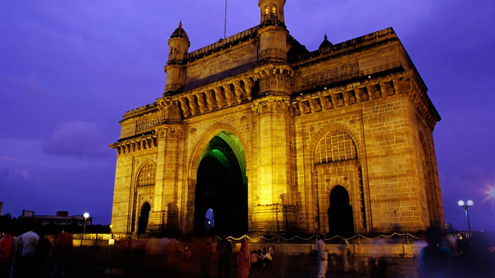Built as an access point for the entry and exit during the British period, the Gateway of India is one of the best historical places in India. This ancient gateway was completed in 1924 and was inaugurated by The Viceroy, the Earl of Reading. It has been reinforced over time using yellow basalt and concrete and has delicate lattice work all over the turrets. The statues of Chhatrapati Shivaji and Swami Vivekananda were also installed at the Gateway later on.
The Gateway of India is an arch monument built during the 20th century in Bombay, India. The monument was erected to commemorate the landing of King George V and Queen Mary at Apollo Bunder on their visit to India in 1911.
Built in Indo-Saracenic style, the foundation stone for the Gateway of India was laid on 31 March 1911. The structure is an arch made of basalt, 26 metres (85 feet) high. The final design of George Wittet was sanctioned in 1914 and the construction of the monument was completed in 1924. The Gateway was later used as a symbolic ceremonial entrance to India for Viceroys and the new Governors of Bombay. It served to allow entry and access to India.
The Gateway of India is located on the waterfront at Apollo Bunder area at the end of Chhatrapati Shivaji Marg in South Mumbai and overlooks the Arabian Sea. The monument has also been referred to as the Taj Mahal of Mumbai, and is the city's top tourist attraction.
History
The Gateway of India was built to commemorate the visit of King George V and Queen Mary to Mumbai, prior to the Delhi Durbar in December 1911. However, they only got to see a cardboard model of the monument, since the construction did not begin till 1915.[citation needed] The foundation stone was laid on March 31, 1913 by the governor of Bombay, Sir George Sydenham Clarke with the final design of George Wittet sanctioned on March 31, 1914.
The land on which the Gateway was built on was previously a crude jetty, used by the fishing community which was later renovated and used as a landing place for British governors and other prominent people. In earlier times, it would have been the first structure that visitors arriving by boat in Mumbai would have seen.
Between 1915 and 1919, work proceeded at Apollo Bundar (Port) to reclaim the land on which the gateway and the new sea wall would be built. The foundations were completed in 1920 and construction was finished in 1924. The gateway was opened on December 4, 1924 by the Viceroy, the Earl of Reading.
The last British troops to leave India following the country's independence, the First Battalion of the Somerset Light Infantry, passed through the Gateway on their way out in a ceremony on February 28, 1948, signalling the end of British rule.
Architectural Layout
The structural design of the Gateway of India is constituted of a large arch, with a height of 26m. The monument is built in yellow basalt and indissoluble concrete. The structural plan of Gateway of India is designed in the Indo-Saracenic style. One can also find traces of Muslim architectural styles incorporated in the structure of the grandiose edifice. The central dome of the monument is about 48 feet in diameter, with a total height of 83 feet. Designed with intricate latticework, the 4 turrets are the prominent features of the entire structure of the Gateway of India. There are steps constructed behind the arch of the Gateway that leads to the Arabian Sea.
Design and architecture
The Scottish architect George Wittet combined the elements of the Roman triumphal arch and the 16th-century architecture of Gujarat. The monument's design is a combination of Hindu and Muslim architectural styles. The arch is of Muslim style while the decorations are of Hindu style. The Gateway of India is built from yellow basalt and reinforced concrete.[16] The stone was locally obtained, and the perforated screens were brought from Gwalior. The gateway faces out to Mumbai Harbour from the tip of Apollo Bunder.
The central dome is 48 feet (15 metres) in diameter and 83 feet (25 metres) above the ground at its highest point. The whole harbour front was realigned in order to come in line with a planned esplanade which would sweep down to the centre of the town. On each side of the arch, there are large halls with the capacity to hold 600 people.[16] The cost of the construction was ₹2 million (US$31,000), borne mainly by the Imperial Government of India. Due to a paucity of funds, the approach road was never built and so the gateway stands at an angle to the road leading up to it.
Location and significance
The Gateway of India is considered as a "symbolic monument" that represents the city of Mumbai, India.
Located opposite the Taj Mahal Palace & Tower hotel, For the British arriving to India, the gateway was a symbol of the "power and majesty" of the British empire.[5] Though built as a welcome to King George V for his visit of 1911, then an event of grand significance for British India and the British empire, today serves as a "monumental memento" of British colonial rule over India.
Opposite the gateway, stands the statue of Chhatrapati Shivaji Maharaj, the Maratha king who used guerilla warfare to establish the Maratha empire in the Sahyadri mountain range in the 17th century, as a symbol of Maratha "pride and courage". The statue was unveiled on 26 January 1961 on the occasion of India's Republic Day.
There are five jetties located around the gateway monument. The first jetty is exclusive to the Atomic Research Centre while the second and third are used for commercial ferry operations, the fourth one is closed and the fifth is exclusive to the Royal Bombay Yacht Club. The second and third jetties are the starting point for tours of Elephanta Caves, which is a 50-minute boat ride away by ferry. Other routes from the Gateway include ferry rides to Alibaug and Mandwa. These ferries are said to carry passengers above their certified capacity due to their popularity.
Interesting fact: The last of the British ships set sail for England from the Gateway of India in the 20th century.
Entry fee: None
Open from: 12am-12pm
Must see: There are steps behind the gateway from where you can take trips to Elephanta Island.
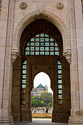
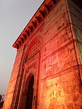
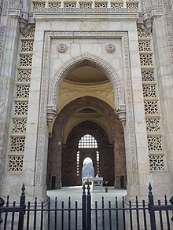
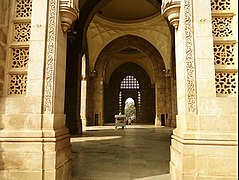
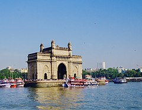

 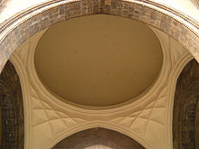
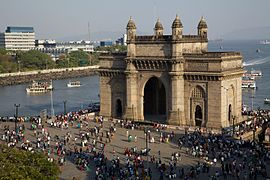
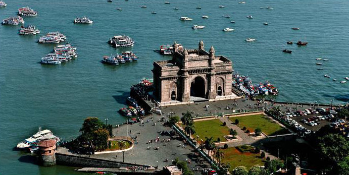
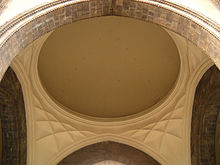
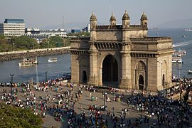
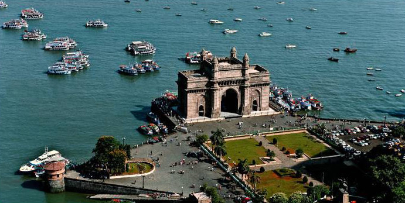
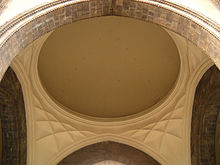
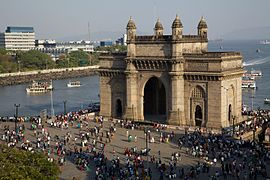
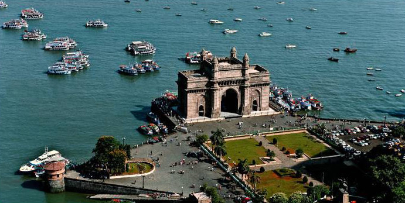
Developed By: Vineet Choudhary